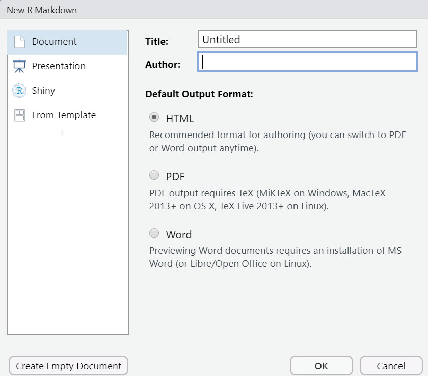

Chapter 5 - R Markdown
Learning objectives
- R Markdown
Introduction
So far, we learned how to import data in all kinds of format into R, convert it into a tibble that follow the the first two tidy principles (one observation per row, one variable per column), and clean up messy strings with the stringr package. These steps are the 80 in the 80/20 rules of data science, which states that 80% of the time is spent preparing the data, and 20% is spent analyzing it.
We are embark on our journal to draw insights from the data and write clear and compelling data stories. This chapter introduces R Markdown documents. A tool that will enable you to perform all the data processing AND produce beautiful reports in one simple, yet powerful, interface.
R Markdown
So far we have been working with R scripts (.r files, like the ones we used for Labs 1 to 3). In R scripts, everything is interpreted by R as code unless we specify that we are writing a comment with #. This works fine and there is no limit to what we can do with these kinds of R scripts in terms of data processing and analysis. However, R scripts are not a great tool for making sharing our data stories with the world.
R Markdown (https://rmarkdown.rstudio.com/) brings coding, writing, and formatting together by allowing you to write nicely formatted HTML, Word or PDF documents, with embedded chunks of code that are executed to process the data and create beautiful tables and figures for your document. It uses the markdown (https://en.wikipedia.org/wiki/Markdown) syntax. This course website is an example of the type of output that you can produce with R Markdown.
There is a lot that you can do with R Markdown that is beyond the scope of this course, but if you want to explore the possibilities I recommend the R Markdown: The Definitive Guide book by Xie, Allaire, and Grolemund (2018). You can also use this R Markdown cheatsheet for a quicker reference that covers most of the basics.
Creating a R Markdown file in RStudio
To create a new R Markdown file (.Rmd), you can click on file, then new file, then select the third option (RMarkdown…). Or you can do this:

Then RStudio will give you an opportunity to provide some information about the document you are creating.

You can select different types of outputs, like documents, presentations, and Shiny applications. In this course, we will use R Markdown to make documents. You can choose to output an HTML document, a PDF document, or a Word document. I recommend sticking with the default HTML function. Word is also a good option if you want to be able to modify the format or add text in Word. The PDF format requires additional packages and a LaTeX installation, so I recommend sticking to HTML documents and Word documents for this course.
When you create a new R Markdown file, it comes with some content that can get you started with the components of the document and the syntax. This can give you a quick overview of how R Markdown works.
Three components of a R Markdown file
There are three components to a R Markdown file: Metadata, text, and code. All components are optional. So you can write a R Markdown document without metadata, or include only code or text.
Metadata
The metadata is located at the top of the RMarkdown document and is delineated by three dashes --- at the beginning and the end. When you create a new Rmarkdown file in RStudio, the metadata will look like this:
---
title: "This is the title of the document"
author: "Philippe Mongeon"
date: "05/02/2022"
output: html_document
---When working with HTML documents, you can add a table of content and use themes for fonts and colors. This is the metadata of the R Markdown file for Lab 4. Aside from the basics, it indicates that I want my HTML file to use the default style, include a floating and collapsed table of content, and not use numbering for my headings. Feel free to use this as a template for your own documents. You can read more about how to construct the metadata section of your documents in Chapter 3 of Xie, Allaire, and Grolemund (2018).
---
title: "INFO6270 Lab 4"
author: "Philippe Mongeon"
date: "2022-02-04"
output:
html_document:
toc: true
toc_float:
collapsed: false
toc_depth: 2
number_sections: false
theme: default
---Text
What ever you write after the metadata statement is text, which can be formatted using markdown syntax. Here is an example, with the code on the left and the HTML output on the right.

Comment
You can also insert comments in your text like this: `<!– comment here –>
Code
What makes R Markdown so great is that you can embed code chunks into your document. You have seen a lot of those code chunks throughout this website so far. Code chunks start with three back ticks followed by curly brackets with the coding language used in the chunk, and end with three back ticks.
```{r}
some r code
```
In the curly brackets, you can also set options that allow you tell R whether to display the code itself, it’s output, or both. {r echo = FALSE} tells R tells R not to display the chunk in the output. {r eval = FALSE} tells R not to execute the code (so the output will not be displayed because there is no output). Here is an example of each option. The code is on the left, and the HTML output is on the right.

Visual mode
RStudio recently introduced the visual mode that provides a lot of tools to make writing and formatting your R Markdown document easier.

Here is the same Rmd file edited in normal mode (left) and visual mode (right).

Rendering (knitting) your document
When you are ready to produce your HTML, Word or PDF document, you click the knit button in RStudio. This will execute all the code and output the HTML, Word or PDF file in your working directory. You can also choose, in the settings, to preview the output in a pop up window or in the viewer pane (as in the screenshots above).

Making beautiful tables with R Markdown
A lot of times, we write statements that print tibbles as their output. So part of making beautiful documents is learning how to print our tibbles as nicely formatted tables.
Here are the key rules for table layout proposed by (wilke2019?) :
Do not use vertical lines.
Do not use horizontal lines between data rows. (Horizontal lines as separator between the title row and the first data row or as frame for the entire table are fine.)
Text columns should be left aligned.
Number columns should be right aligned and should use the same number of decimal digits throughout.
Columns containing single characters are centered.
The header fields are aligned with their data, i.e., the heading for a text column will be left aligned and the heading for a number column will be right aligned.
Captions are placed above the table.
the kableExtra package
There are a bunch of popular packages that you can explore to make really nice tables. The kableExtra package is very versatile and I recommend it as a start. You can find all the information you need to fully exploit the package in the official vignette: https://cran.r-project.org/web/packages/kableExtra/vignettes/awesome_table_in_html.html.
library(kableExtra)
kbl(head(mpg))| manufacturer | model | displ | year | cyl | trans | drv | cty | hwy | fl | class |
|---|---|---|---|---|---|---|---|---|---|---|
| audi | a4 | 1.8 | 1999 | 4 | auto(l5) | f | 18 | 29 | p | compact |
| audi | a4 | 1.8 | 1999 | 4 | manual(m5) | f | 21 | 29 | p | compact |
| audi | a4 | 2.0 | 2008 | 4 | manual(m6) | f | 20 | 31 | p | compact |
| audi | a4 | 2.0 | 2008 | 4 | auto(av) | f | 21 | 30 | p | compact |
| audi | a4 | 2.8 | 1999 | 6 | auto(l5) | f | 16 | 26 | p | compact |
| audi | a4 | 2.8 | 1999 | 6 | manual(m5) | f | 18 | 26 | p | compact |
As you can see, the table meets most of the criteria listed above. Our table only lacks a caption, and the drv column should be centered. We can fix that by using the caption arguments and manually setting the columns alignment (l = left, r = right, and c = centre). Let’s also apply of the the basic kable themes to make our table look a bit better.
kbl(head(mpg),
caption = "This is the caption of the table",
align=c("l","l","r","r","r","l","c","r","r","c","l"))| manufacturer | model | displ | year | cyl | trans | drv | cty | hwy | fl | class |
|---|---|---|---|---|---|---|---|---|---|---|
| audi | a4 | 1.8 | 1999 | 4 | auto(l5) | f | 18 | 29 | p | compact |
| audi | a4 | 1.8 | 1999 | 4 | manual(m5) | f | 21 | 29 | p | compact |
| audi | a4 | 2.0 | 2008 | 4 | manual(m6) | f | 20 | 31 | p | compact |
| audi | a4 | 2.0 | 2008 | 4 | auto(av) | f | 21 | 30 | p | compact |
| audi | a4 | 2.8 | 1999 | 6 | auto(l5) | f | 16 | 26 | p | compact |
| audi | a4 | 2.8 | 1999 | 6 | manual(m5) | f | 18 | 26 | p | compact |
The kableExtra package includes some standard themes that you can use to format your tables: kable_classic(), kable_classic_2, kable_minimal(), kable_material(), kable_material_dark(), and kable_paper(). Here’s the same table to which we apply the classic theme.
kbl(head(mpg),
caption = "This is the caption of the table",
align=c("l","l","r","r","r","l","c","r","r","c","l")) %>%
kable_classic()| manufacturer | model | displ | year | cyl | trans | drv | cty | hwy | fl | class |
|---|---|---|---|---|---|---|---|---|---|---|
| audi | a4 | 1.8 | 1999 | 4 | auto(l5) | f | 18 | 29 | p | compact |
| audi | a4 | 1.8 | 1999 | 4 | manual(m5) | f | 21 | 29 | p | compact |
| audi | a4 | 2.0 | 2008 | 4 | manual(m6) | f | 20 | 31 | p | compact |
| audi | a4 | 2.0 | 2008 | 4 | auto(av) | f | 21 | 30 | p | compact |
| audi | a4 | 2.8 | 1999 | 6 | auto(l5) | f | 16 | 26 | p | compact |
| audi | a4 | 2.8 | 1999 | 6 | manual(m5) | f | 18 | 26 | p | compact |
keeping it simple
My main advice with tables is to keep them clean, simple, and informative. Usually simple tables are enough to convey the message efficiently. That said, if you want to impress with fancy tables, this can certainly be done with kableExtra or some of the other table packages (an overview of some of the main packages is available on this website).
Summary
R Markdown documents bring together the data processing, analysis and reporting elements of the data science workflow in a single location. And the visual tool brings the R Markdown document writing experience closer to writing in Word or by hiding the code and letting you visualize the format of your document as you are write them.
To get you used to R Markdown, we will be using it for the remaining labs of the course. You are also encouraged to use it to produce your individual project report.